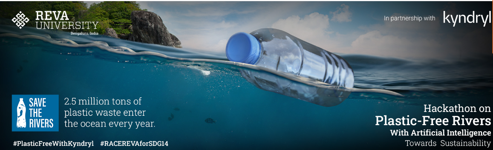

Plastic Waste Detection with Computer Vision
A YOLOv8 model built during a REVA University data competition to detect plastic waste in rivers — applying computer vision to environmental sustainability and cleaner waterways.
View on GitHub